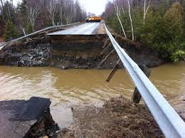

A flood occurs when water overflows or inundates land that's normally dry. This can happen in a multitude of ways. Most common is when rivers or streams overflow their banks. Excessive rain, a ruptured dam or levee, rapid ice melting in the mountains, or even an unfortunately placed beaver dam can overwhelm a river and send it spreading over the adjacent land, called a floodplain. Coastal flooding occurs when a large storm or tsunami causes the sea to surge inland.
after damage
The points are mentioned below:
1.Introduce better flood warning systems
The UK must "improve our flood warning systems", giving people more time to take action during flooding, potentially saving lives, the deputy chief executive of the Environment Agency, David Rooke, said. Advance warning and pre-planning can significantly reduce the impact from flooding.
2.Modify homes and businesses to help them withstand floods
The focus should be on “flood resilience” rather than defence schemes, according to Laurence Waterhouse, director of civil engineering flood consultancy Pell Frischmann. He advised concreting floors and replacing materials such as MDF and plasterboard with more robust alternatives. “We are going to have to live with flooding. It's here to stay,” Mr Waterhouse said. “We need to be prepared." His recommendations were echoed by Mr Rooke, who suggested waterproofing homes and businesses and moving electric sockets higher up the walls to increase resilience.
3.Construct buildings above flood levels
Britain should construct all new buildings one metre from the ground to prevent flood damage, the former president of the Institution of Civil Engineers has suggested. Professor David Balmforth, who specialises in flood risk management, said conventional defences had to be supplemented with more innovative methods to lower the risk of future disasters.
4.Tackle climate change
Climate change has contributed to a rise in extreme weather events, scientists believe. Earlier this month the leader of the Green Party, Natalie Bennett, welcomed the landmark Paris Agreement, whereby governments from 195 countries pledged to “pursue efforts” to limit the increase in global average temperatures to 1.5°C above pre-industrial levels. “It is now crucial that world leaders deliver on the promise of Paris,” Ms Bennett said. “The pressure is now on the British government to reverse its disastrous environmental policy-making.”
5.Increase spending on flood defences
Figures produced by the House of Commons library suggest that real terms spending on flood defences has fallen by 20 per cent since David Cameron came to power. Yesterday [MON] the Prime Minister rejected this allegation, insisting the amount being spent had risen. Mr Cameron promised to review spending on flood defences after chairing a conference call of the government's emergency Cobra committee at the weekend.
6.Protect wetlands and introduce plant trees strategically
The creation of more wetlands – which can act as sponges, soaking up moisture – and wooded areas can slow down waters when rivers overflow. These areas are often destroyed to make room for agriculture and development, the WWF said. Halting deforestation and wetland drainage, reforesting upstream areas and restoring damaged wetlands could significantly reduce the impact of climate change on flooding, according to the conservation charity.
7.Restore rivers to their natural courses
Many river channels have been historically straightened to improve navigability. Remeandering straightened rivers by introducing their bends once more increases their length and can delay the flood flow and reduce the impact of the flooding downstream.
8.Introduce water storage areas
Following the severe flooding of 2009 a £5.6 million flood alleviation scheme was established in Thacka Beck, on the outskirts of Penrith, Cumbria. More than 675 metres of culverts underneath the streets of Penrith were replaced and a 76,000m³ flood storage reservoir – the equivalent of 30 Olympic sized swimming pools – was constructed upstream to hold back flood water. The risk of flooding from the beck was reduced from a 20 per cent chance in any given year to a one per cent chance, according to Cumbria Wildlife Trust.
9.Improve soil conditions
Inappropriate soil management, machinery and animal hooves can cause soil to become compacted so that instead of absorbing moisture, holding it and slowly letting it go, water runs off it immediately. Well drained soil can absorb huge quantities of rainwater, preventing it from running into rivers.
10.Put up more flood barriers
The Environment Agency uses a range of temporary or “demountable” defences in at-risk areas. These can be removed completely when waters recede. Temporary barriers can also be added to permanent flood defences, such as raised embankments, increasing the level of protection. “As the threat and frequency of flood risk increases, the use of passive flood defence has to be the only realistic long term solution,” Frank Kelly, CEO of UK Flood Barriers claimed earlier this month in Infrastructure Intelligence, a magazine for the infrastructure sector. Mr Kelly’s company was responsible for designing a self-activating flood barrier he said had proved to be “invaluable” in protecting properties close to the River Cocker.